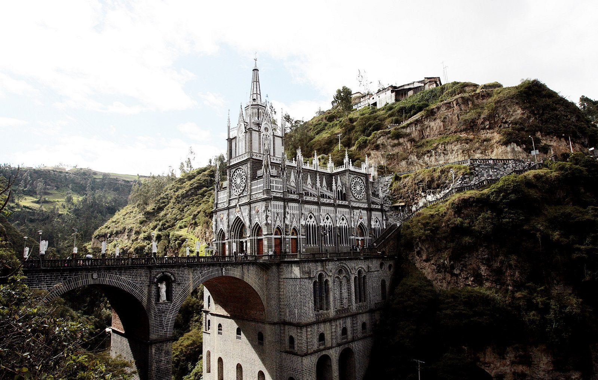
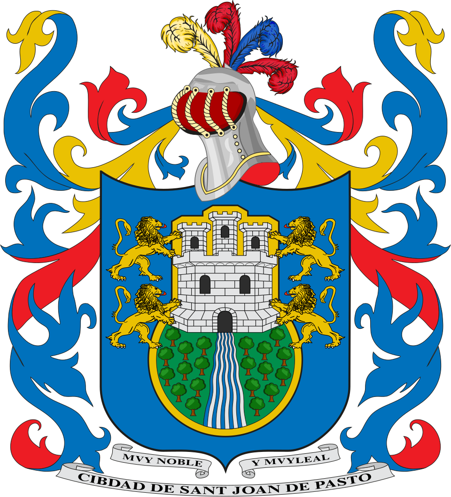
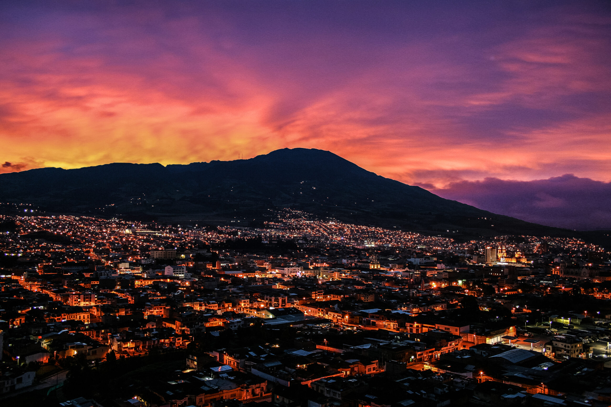
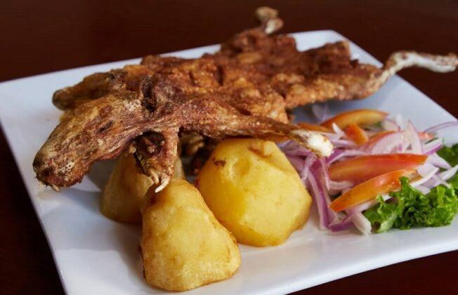

La Laguna de Cocha
Un espejo de agua majestuoso rodeado de verdes montañas, famoso por la hermosa Isla de La Corota y su deliciosa trucha arcoíris.
La Gran Ciudad, tierra de gente amable, cultura y majestuosos paisajes andinos.


.jpg)


Ubicada al sur de Colombia, a los pies del imponente Volcán Galeras, Pasto es una ciudad llena de historia, arquitectura colonial, arte en Barniz de Pasto (Mopa-Mopa) y un calor humano inigualable que arropa a todo visitante.
El pastuso se caracteriza por su hospitalidad, su alegría y su resiliencia. Con una sonrisa siempre lista, los habitantes de esta tierra mantienen vivas las tradiciones ancestrales, trabajando con orgullo en el campo, el arte y el comercio.
Descubre los rincones naturales y arquitectónicos más hermosos de la región:
Un espejo de agua majestuoso rodeado de verdes montañas, famoso por la hermosa Isla de La Corota y su deliciosa trucha arcoíris.

El guardián imponente de la ciudad, ideal para los amantes del ecoturismo, los miradores panorámicos y las leyendas andinas.
La ciudad teológica de Colombia sorprende con joyas arquitectónicas como el Templo de San Juan Bautista y Las Mercedes.